Introduction
Krenoril is a game data system that allows for modular storage of records through JSON files that can be loaded dynamically by Unreal Engine 4.
These files are called containers, and each container can provide modifications to records defined in containers loaded before this one, or it can define new records altogether. This allows players and developers to rapidly create content for any data-driven
game, through the use of the a desktop application called the Krenoril Data Editor. This guide will cover the various functions that can be performed using the Krenoril editor.
To get started, start up the Krenoril editor through the "Krenoril Data Editor.exe" file. Then, click on the "Settings" option in the top bar. This will open up a modal that allows you to select the location of the containers that are being used for the game. Point this to GAME_INSTALL_PATH/Content/KrenorilData, where GAME_INSTALL_PATH/Content is the path to the game's content folder, located in the directory the game is installed to. Click the "Confirm" button after updating the data folder path, and restart the editor. Now, all containers found in the data folder will be loaded.
To get started, start up the Krenoril editor through the "Krenoril Data Editor.exe" file. Then, click on the "Settings" option in the top bar. This will open up a modal that allows you to select the location of the containers that are being used for the game. Point this to GAME_INSTALL_PATH/Content/KrenorilData, where GAME_INSTALL_PATH/Content is the path to the game's content folder, located in the directory the game is installed to. Click the "Confirm" button after updating the data folder path, and restart the editor. Now, all containers found in the data folder will be loaded.
Editor UI Overview
The Krenoril editor looks like this:
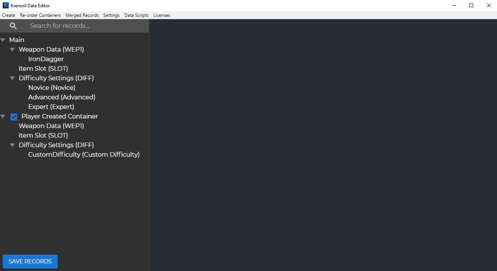
On the left hand side of the screen, you can see a list of all loaded containers, schemas, and records defined by a container. This is represented in a tree format, and items in the tree can be collapsed or expanded by selecting the triangle icon next to each icon. You can select any item in the tree and view more details about it. You can view and edit the name and description of any container (except for the Main container), and view and edit records.
Above that tree, there is a search bar that allows you to search for records based on their id or name. It can be used by entering some text to filter by, and pressing the enter key (or clicking the magnifying glass icon). The search filter can be reset to show all records again by emptying the search text field, and pressing the enter key (or clicking the magnifying glass again). 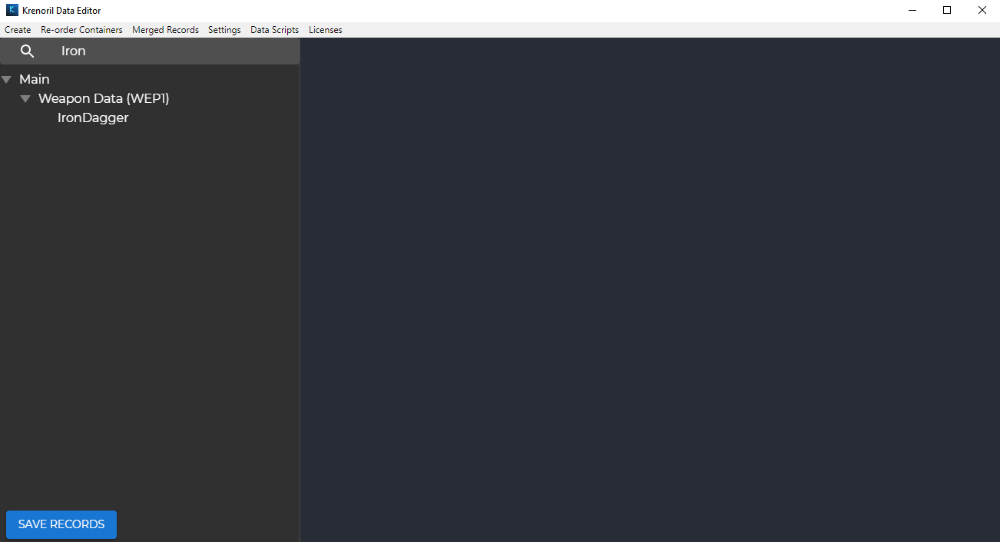
On the bottom left corner of the screen, there is a "Save Records" button. This must be manually clicked after making changes to any existing record, or after creating any new record, or your changes will not be saved!
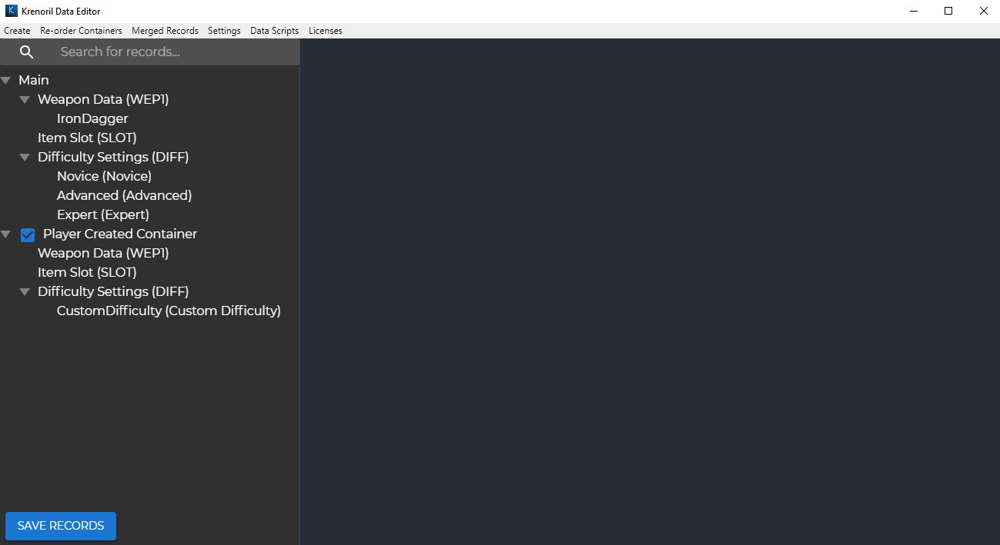
On the left hand side of the screen, you can see a list of all loaded containers, schemas, and records defined by a container. This is represented in a tree format, and items in the tree can be collapsed or expanded by selecting the triangle icon next to each icon. You can select any item in the tree and view more details about it. You can view and edit the name and description of any container (except for the Main container), and view and edit records.
Above that tree, there is a search bar that allows you to search for records based on their id or name. It can be used by entering some text to filter by, and pressing the enter key (or clicking the magnifying glass icon). The search filter can be reset to show all records again by emptying the search text field, and pressing the enter key (or clicking the magnifying glass again). 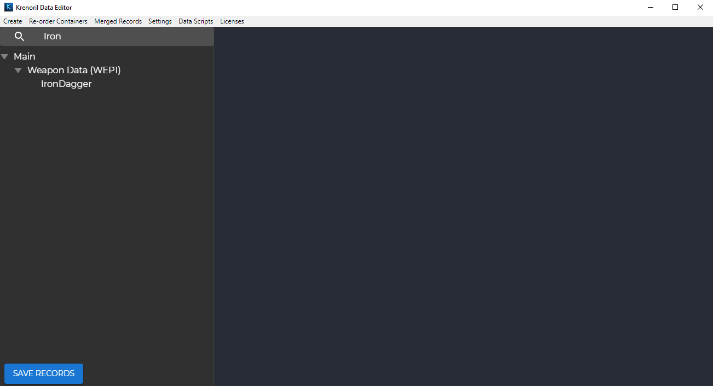
On the bottom left corner of the screen, there is a "Save Records" button. This must be manually clicked after making changes to any existing record, or after creating any new record, or your changes will not be saved!
Containers
As mentioned above, clicking any container in the loaded containers list view will show you details about the container. If you select any container other than the first one, you will be able to view
and edit details about the container. In most cases, you should not modify the containers that other people have created directly, and you should instead create a new one to override their functionality where needed. Note that you will not be able to edit the Main container directly, as this is meant to be edited only by the developers of the game.
To create a new container, click the "Create" option in the top bar, and select the "Container" option from the dropdown list.

This will allow you to set the name and description of the new container on the right-hand side of the screen. The container name must be unique. Click the "Save" button highlighted below to create your container.
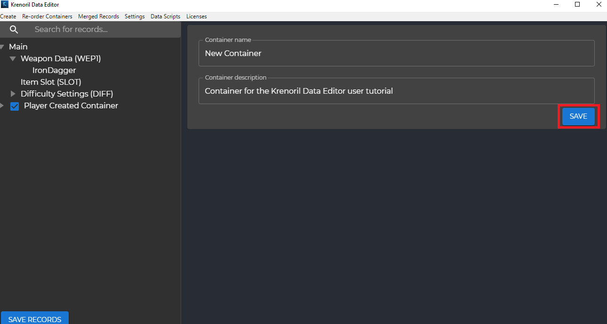
After clicking "Save", your container will appear on the left-hand side of the screen. 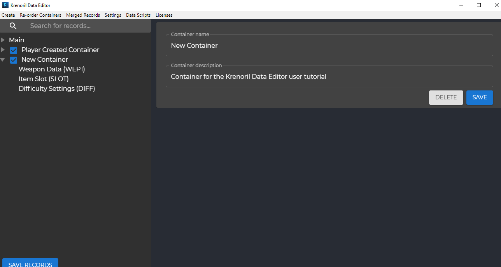
To create a new container, click the "Create" option in the top bar, and select the "Container" option from the dropdown list.
This will allow you to set the name and description of the new container on the right-hand side of the screen. The container name must be unique. Click the "Save" button highlighted below to create your container.
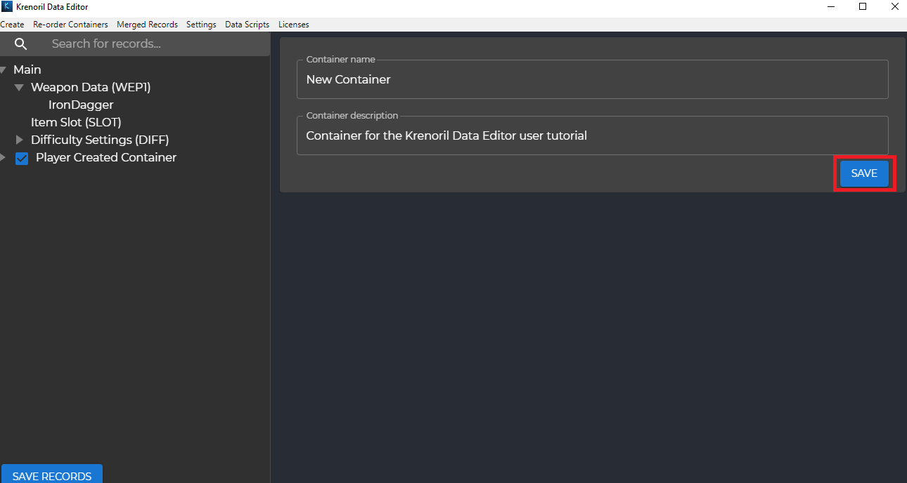
After clicking "Save", your container will appear on the left-hand side of the screen. 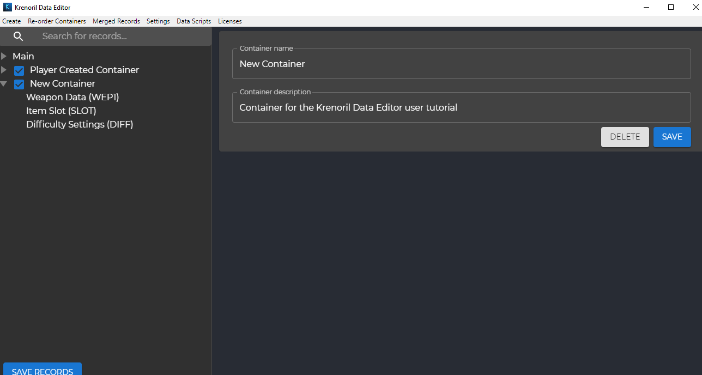
Records
Records are the actual data elements that will be present inside the game. A new record can be created by clicking the "Create" button in the top bar, and then selecting the "Record" option
from the dropdown list. From there, you will be shown a modal that lets you enter details about the record. The record must have a non-empty, alphanumeric unique ID, a container that it belongs to, and a schema
that it falls under. Click the "Confirm" button to create the record.
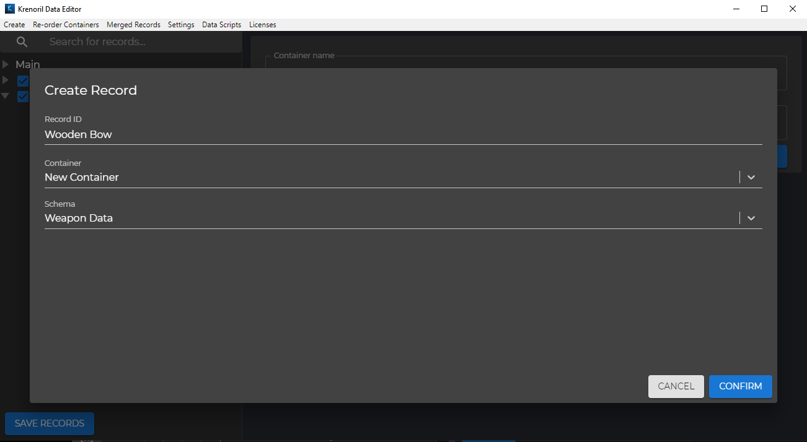
After creating the record, it will show up on the left-hand side of the screen, under the container you selected to create the record in. On the right-hand side of the screen, you will be able to see the property values of the new record.

While viewing details about a record, you can see the value for each property defined in the schema, separated by the property type. There are four types of properties: integer, float, string, and table. Each type is represented by one tab on the right-hand side of the screen, and all properties falling under the current selected tab's type will be shown in a table. The values of any of those properties can be modified by clicking on the pencil (edit) icon in a property's row in the table.
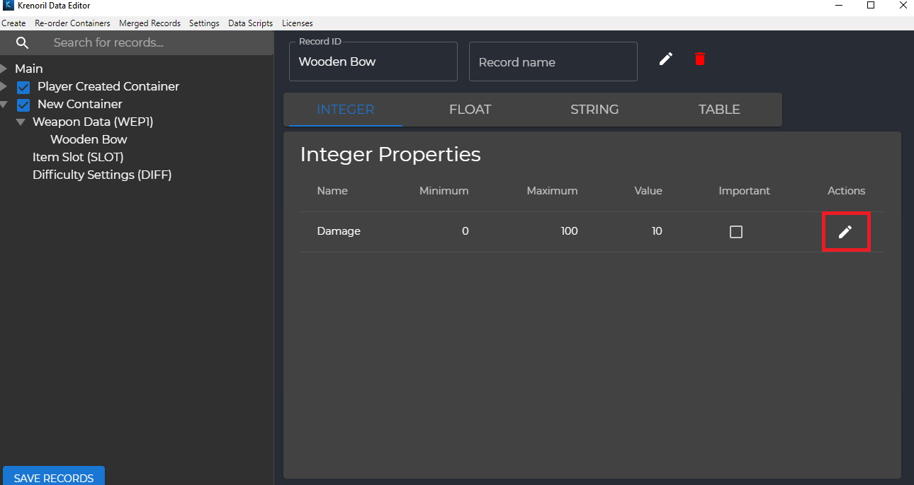
Note that now that you have created the record, you will need to click the "Save" button on the bottom-left corner of the screen in order for it to be saved.
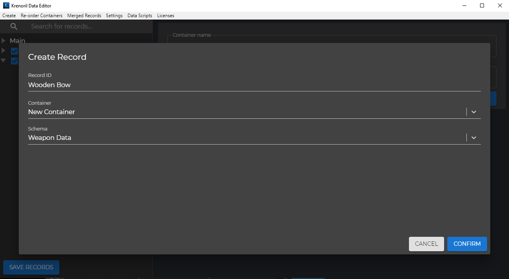
After creating the record, it will show up on the left-hand side of the screen, under the container you selected to create the record in. On the right-hand side of the screen, you will be able to see the property values of the new record.
While viewing details about a record, you can see the value for each property defined in the schema, separated by the property type. There are four types of properties: integer, float, string, and table. Each type is represented by one tab on the right-hand side of the screen, and all properties falling under the current selected tab's type will be shown in a table. The values of any of those properties can be modified by clicking on the pencil (edit) icon in a property's row in the table.
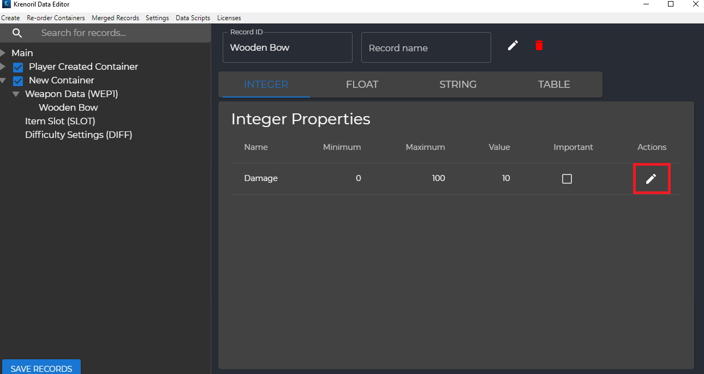
Note that now that you have created the record, you will need to click the "Save" button on the bottom-left corner of the screen in order for it to be saved.
Merged Records
If you are creating a new record, and you set its unique ID to the unique ID of another record that already exists in an earlier loaded container, then the values from the later loaded container will override the values of that record in the earlier loaded container.
Integer, float, and string values will be directly overridden, unless the earlier loaded container had the "Important" setting checked for a particular property in that container and the later loaded container did not have the "Important" setting checked for that same property.
Making a property "Important" can be done through clicking the checkbox in a row in the property table.
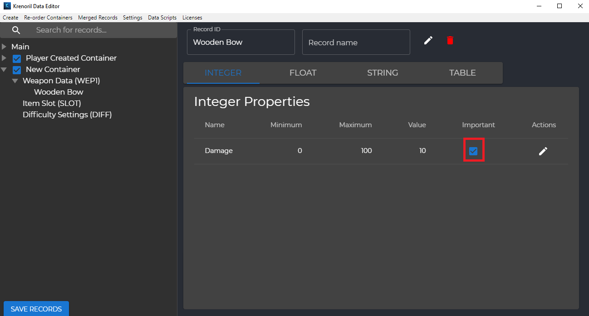
Table properties will not be directly overridden, and are instead merged together based on the unique IDs of each row. If a row has the same ID in both containers, then the later loaded container's values for that row will be used. Otherwise, if the rows have different IDs, then they will be concatenated without any overriding happening.
As mentioned above, the order that containers are loaded in matters. This determines how the record merging process will take place. The order in which containers are loaded is the same order in which they will appear in the loaded containers list on the left-hand side of the screen. Containers can be re-ordered by clicking the "Re-order Containers" option from the top bar. Note that the "Main" container can never be re-ordered. It is meant to be loaded first, but any other containers can be re-ordered by dragging them to a different area of the list. This view can be exited by clicking the "Exit Re-order View" button in the bottom left corner of the screen.
If you want to see a preview of the results of the record merging process, click the "Merged Records" option from the top bar. Here, all records will appear with the same values that they will have in game. This view can be exited by clicking the "Exit Merged View" button in the bottom left corner of the screen.
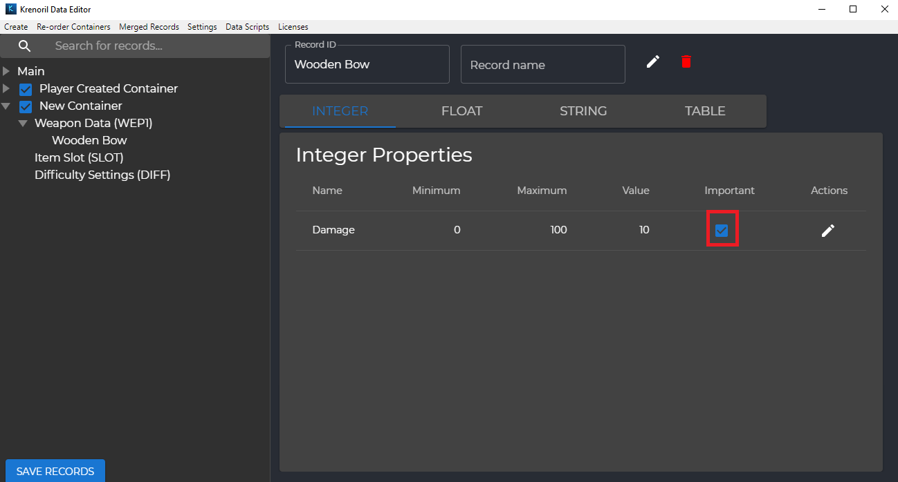
Table properties will not be directly overridden, and are instead merged together based on the unique IDs of each row. If a row has the same ID in both containers, then the later loaded container's values for that row will be used. Otherwise, if the rows have different IDs, then they will be concatenated without any overriding happening.
As mentioned above, the order that containers are loaded in matters. This determines how the record merging process will take place. The order in which containers are loaded is the same order in which they will appear in the loaded containers list on the left-hand side of the screen. Containers can be re-ordered by clicking the "Re-order Containers" option from the top bar. Note that the "Main" container can never be re-ordered. It is meant to be loaded first, but any other containers can be re-ordered by dragging them to a different area of the list. This view can be exited by clicking the "Exit Re-order View" button in the bottom left corner of the screen.
If you want to see a preview of the results of the record merging process, click the "Merged Records" option from the top bar. Here, all records will appear with the same values that they will have in game. This view can be exited by clicking the "Exit Merged View" button in the bottom left corner of the screen.
Bulk Operations
If you are creating, modifying, or deleting a large number of records, it is likely that you do not want to do this manually through the editor. If you know how to write basic JavaScript code, you can use
the "Data Scripts" functionality built into the Krenoril editor to automate the process, by clicking the "Data Scripts" option from the top bar.
Click on the question mark in the modal that pops up to learn about Data Scripts.
Note that when you are using the bulk operations API, constraints such as minimum and maximum values for integer properties will not be adhered to, and referential integrity will not be checked.
If you try to specify the prefix of a schema that does not exist, or try to set the value of a property that does not exist for a given schema, you will receive an error when running your script.
When reading data from external files in your scripts, if you are using the relative path of the file, the path will be relative to which directory the Krenoril Data Editor application was run from.
Click on the question mark in the modal that pops up to learn about Data Scripts.
Note that when you are using the bulk operations API, constraints such as minimum and maximum values for integer properties will not be adhered to, and referential integrity will not be checked.
If you try to specify the prefix of a schema that does not exist, or try to set the value of a property that does not exist for a given schema, you will receive an error when running your script.
When reading data from external files in your scripts, if you are using the relative path of the file, the path will be relative to which directory the Krenoril Data Editor application was run from.